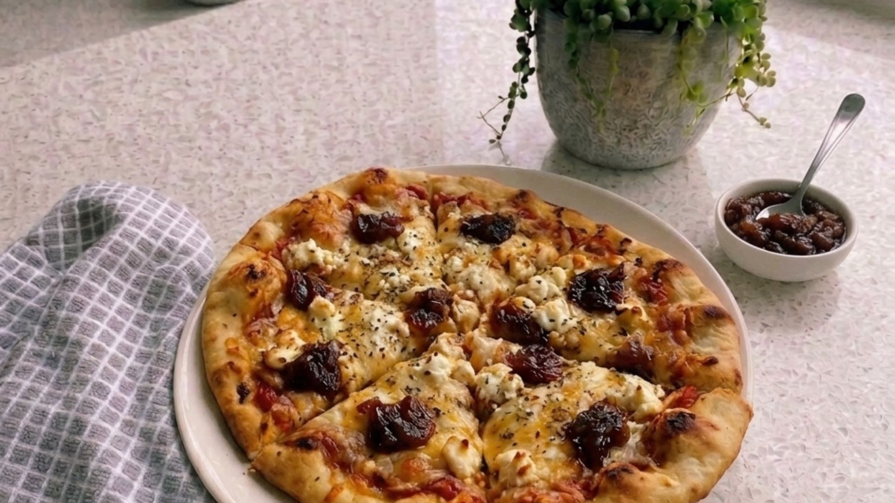
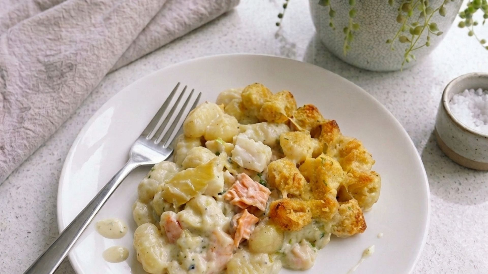
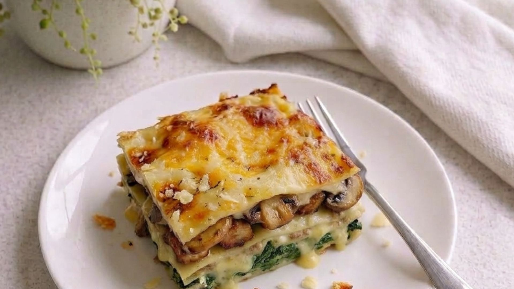
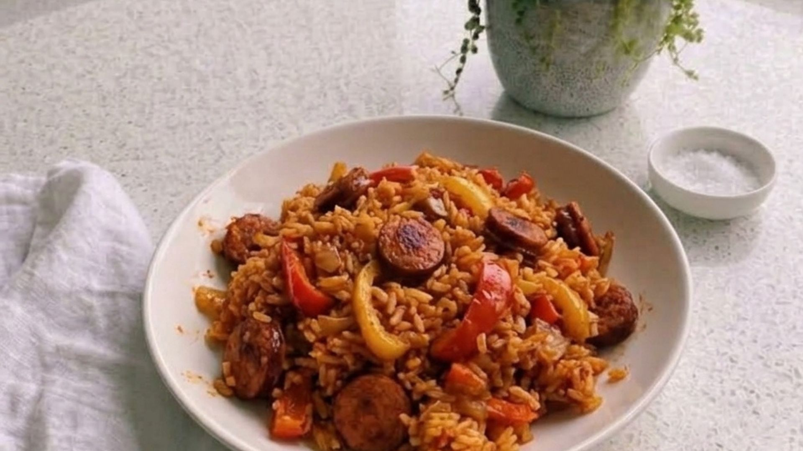
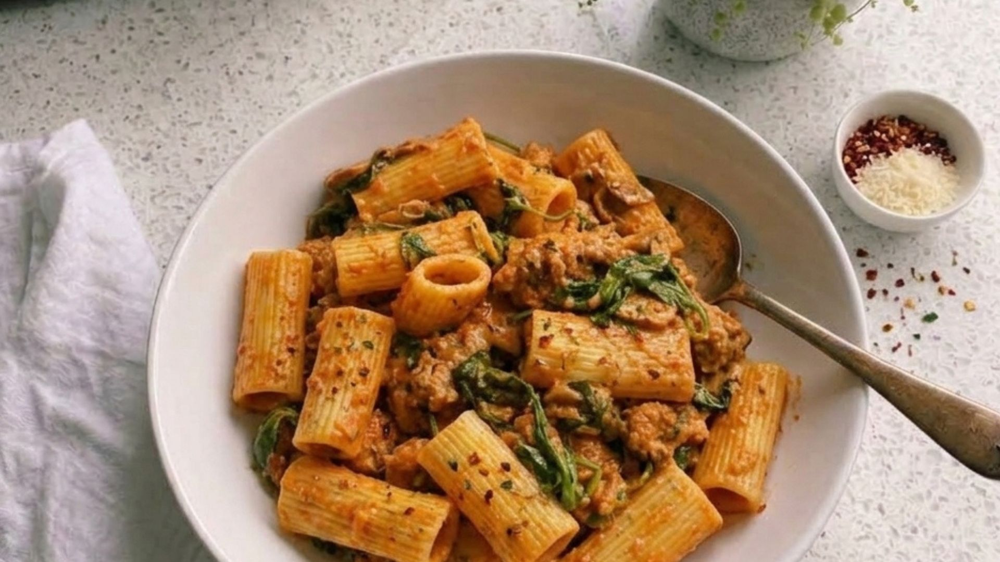
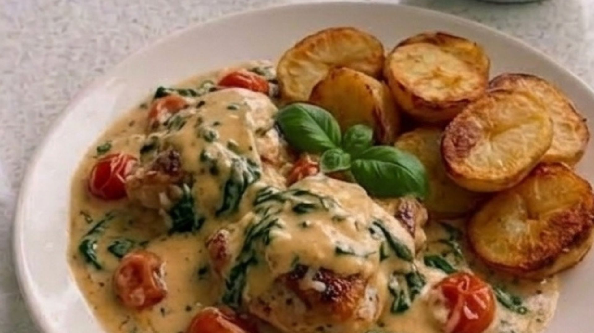
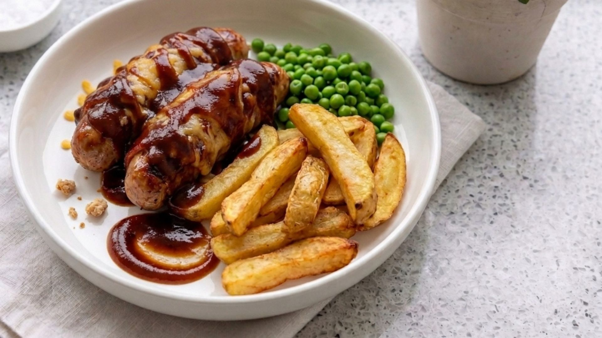

7 simple, filling family meals planned out for you. No complicated recipes — just good food.

Passata naan pizzas with goat's cheese, cheddar and dollops of onion chutney.
View Recipe →
Creamy fish pie with gnocchi, frozen fish pie mix and a golden cheddar top.
View Recipe →
Creamy pork steak lasagne with mushrooms, spinach and cheddar — no tomato sauce.
View Recipe →
One-pan chorizo rice with sweet peppers, smoked paprika and tomatoes.
View Recipe →
Beef mince pasta with peri-peri heat cooled with crème fraîche.
View Recipe →
Chicken thighs in a creamy basil sauce with baby tomatoes, spinach and roast potatoes.
View Recipe →
Bacon-wrapped sausages with BBQ sauce, melted cheddar, homemade chips and peas.
View Recipe →Everything you need for Week 6
View Full ListNot every evening needs a full cooked meal. Picnic Tea is our relaxed, low-effort option — a chance to use up whatever bits and pieces are left from the week's shopping without needing to cook or plan anything complicated. It's especially handy on kid club nights when you need something quick, or when you're eating on the go.